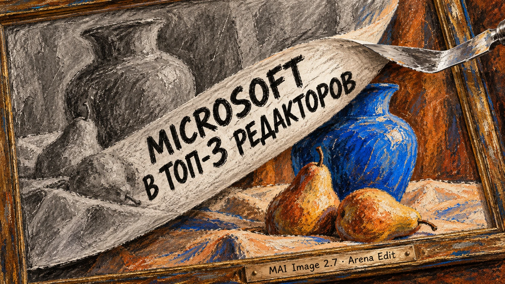

Microsoft
Разработки ИИ, облачные продукты и корпоративные решения Microsoft.
17 материалов в редакционной подборке
Публикации
 26 ноября 2026 · Скайнет просыпается
26 ноября 2026 · Скайнет просыпаетсяMicrosoft выяснила, что ИИ-хакеры способны взломать компанию за считаные минуты
Microsoft обнаружила ARTEX в арсенале как минимум шести хакерских группировок. При определённых условиях ИИ-агенты получают расширенные права доступа к корпоративным системам за несколько минут.
 24 ноября 2026 · Новости ИИ
24 ноября 2026 · Новости ИИКомпания бывшего главы «Яндекса» замахнулась на $45 млрд, но стройка для Microsoft уже буксует
Nebius Аркадия Воложа планирует капитальные расходы $40–45 млрд на ИИ-инфраструктуру в 2027 году. При этом дата-центр для Microsoft в Нью-Джерси отстаёт от графика.
 22 ноября 2026 · Новости ИИ
22 ноября 2026 · Новости ИИMicrosoft поселила ИИ в Edge. Ему не нужен интернет
Microsoft выпустила локальную ИИ-модель Aion Instruct для Edge. Сайты могут тестировать её через Prompt API, но нужны подходящее устройство и первоначальная загрузка.
 20 ноября 2026 · Новости ИИ
20 ноября 2026 · Новости ИИMicrosoft устроила ИИ-агентов на работу: выдала им почту и начальника
Microsoft внедряет автономных ИИ-сотрудников Foundry с собственными учётными записями и назначенными руководителями. В компании используют более 30 шаблонов таких агентов; права на документы выдаются отдельно.
 20 ноября 2026 · Скайнет просыпается
20 ноября 2026 · Скайнет просыпаетсяВ ИИ-пакет Microsoft подложили вирус — он сам воровал пароли
В PyPI под именем официального Microsoft Agent Framework появились две заражённые версии. Похититель запускался при старте Python; исследователи Wiz обнаружили три случая утечки данных.
 19 ноября 2026 · Новости ИИ
19 ноября 2026 · Новости ИИMicrosoft создала ИИ для поиска уязвимостей: в тесте он обошёл GPT-6 Astra при затратах в 50 раз ниже
Microsoft представила MAI Cyber 2 Flash для поиска уязвимостей. В тесте CyberGym-E2E модель достигла 92,3% успешных заданий против 91,5% у GPT-6 Astra при затратах менее 2% стоимости конкурента.
 19 ноября 2026 · Новости ИИ
19 ноября 2026 · Новости ИИMicrosoft заявила, что её ИИ-программист почти сравнялся с Claude Opus при затратах в 20 раз ниже
Microsoft представила MAI Code 2 и MAI Code 2 Flash для программирования в GitHub Copilot. По четырём тестам компании MAI Code 2 достигла 96% результата Claude Opus 5.5 при 5% затрат с учётом временной скидки.
 15 ноября 2026 · Скайнет просыпается
15 ноября 2026 · Скайнет просыпаетсяMicrosoft спрятала в ИИ опасную команду
Microsoft показала способ внедрить скрытую команду в готовую нейросеть без переобучения, изменив семь редко активных нейронов. Закладка срабатывала при специальном сигнале в лабораторных испытаниях.
 12 ноября 2026 · Новости ИИ
12 ноября 2026 · Новости ИИAdobe научила Photoshop менять ракурс, а Premiere — генерировать видео
Adobe представила новые ИИ-инструменты для Photoshop, Premiere и Firefly: изменение ракурса и композиции изображений, генерацию видео и звука на монтажной дорожке, агентные творческие инструменты и планы интеграции с Google и Microsoft. Часть возможностей находится в бета-версии, интеграция сторонних агентов ожидается в 2027 году.
 3 ноября 2026 · Новости ИИ
3 ноября 2026 · Новости ИИOpenAI, Google, Microsoft и Anthropic разрешат сайтам запрещать обучение ИИ
OpenAI, Google, Microsoft и Anthropic договорились поддерживать единый способ отказа от использования материалов сайтов для обучения нейросетей. Владельцам сайтов больше не придётся составлять отдельные запреты для каждой из этих компаний, когда все они внедрят новый механизм.
 3 ноября 2026 · Громко сказано
3 ноября 2026 · Громко сказаноГлава Microsoft AI призвал остановить разработку сознательных нейросетей
Если во время обучения искусственного интеллекта появятся убедительные признаки сознания, разработку следует остановить до устранения этих свойств. С таким предложением выступил Мустафа Сулейман, руководитель Microsoft AI. 1 ноября он опубликовал большое заявление в X, в котором
 29 октября 2026 · Новости ИИ
29 октября 2026 · Новости ИИMicrosoft открыла «движок» Copilot для 20+ нейросетей!
Нейросети становятся умнее, но сами по себе они мало что умеют делать за пределами чата. Чтобы ИИ-агент действительно работал, кто-то должен выдавать ему задания, подключать инструменты, сохранять контекст и следить, чтобы он не натворил лишнего. Microsoft решила поделиться

29 октября 2026 · Новости ИИMicrosoft потеснила OpenAI! Новый ИИ-редактор ворвался в топ-3
Microsoft показала MAI-Image-2.7 — новую модель для редактирования изображений. Она умеет менять освещение и стиль сцены, править надписи и символы, переносить объекты в другую обстановку, а также восстанавливать и улучшать картинки. Это не генератор «с нуля». Сейчас модель
 27 октября 2026 · Новости ИИ
27 октября 2026 · Новости ИИMicrosoft предложила уйти каждому четвёртому сотруднику. Даже вице-президентам
60 тысяч сотрудников Microsoft получили предложение уволиться. Добровольно, с компенсацией. Это примерно 27% всего штата компании. 26 октября Microsoft объявила программу Voluntary Exit Offer — добровольного ухода с выходным пособием. Предложения распространяются на сотрудников
 26 октября 2026 · ИИ, ты чего творишь?
26 октября 2026 · ИИ, ты чего творишь?1024 ИИ-агента без начальника: Microsoft открыла код Agensh
Тысяча нейросетей работает над одной задачей. Каждая самостоятельно выбирает себе участок работы, обменивается находками с коллегами и проверяет чужие результаты. А руководителя, который раздаёт поручения, вообще нет. — платформы, позволяющей объединять до 1024 ИИ-агентов для
 23 октября 2026 · Новости ИИ
23 октября 2026 · Новости ИИИИ Microsoft обошёл врачей в диагностике сложных заболеваний
Microsoft отправила на диагностический экзамен целый консилиум виртуальных врачей. Настоящим врачам пришлось сдавать его поодиночке. Результаты оказались впечатляющими: 83% правильных диагнозов у ИИ против 36% у медиков, которым разрешили пользоваться справочниками и
 14 октября 2026 · Новости ИИ
14 октября 2026 · Новости ИИMicrosoft представила Maia 300 — собственную альтернативу ускорителям NVIDIA
12 октября Microsoft раскрыла характеристики третьего поколения собственных ИИ-ускорителей.